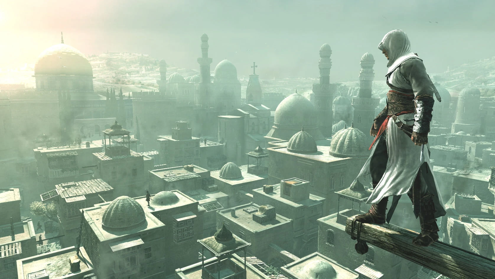
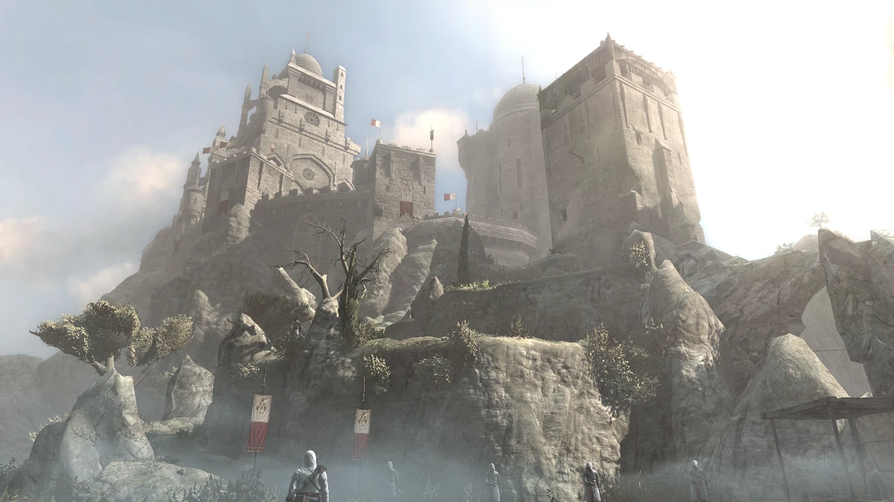

Альтаир ибн Ла-Ахад
Главный протагонист первой игры серии Assassin's Creed. Молодой и самоуверенный ассасин, который после неудачной миссии должен искупить свою вину, выполнив серию заданий и восстановив своё положение в ордене.
Ранг
Мастер-ассасин
Оружие
Скрытый клинок
Эпоха
1191 г.
Ничто не истинно, всё дозволено.
— Кредо ассасинов
Галерея

Иерусалим

Крепость Масиаф

Важнейшие события
Факты об игре
- Первая игра серии, выпущена в 2007 году
- Действие происходит во времена Третьего крестового похода
- Ввела основные механики серии: паркур, скрытые убийства
- Установила конфликт между ассасинами и тамплиерами